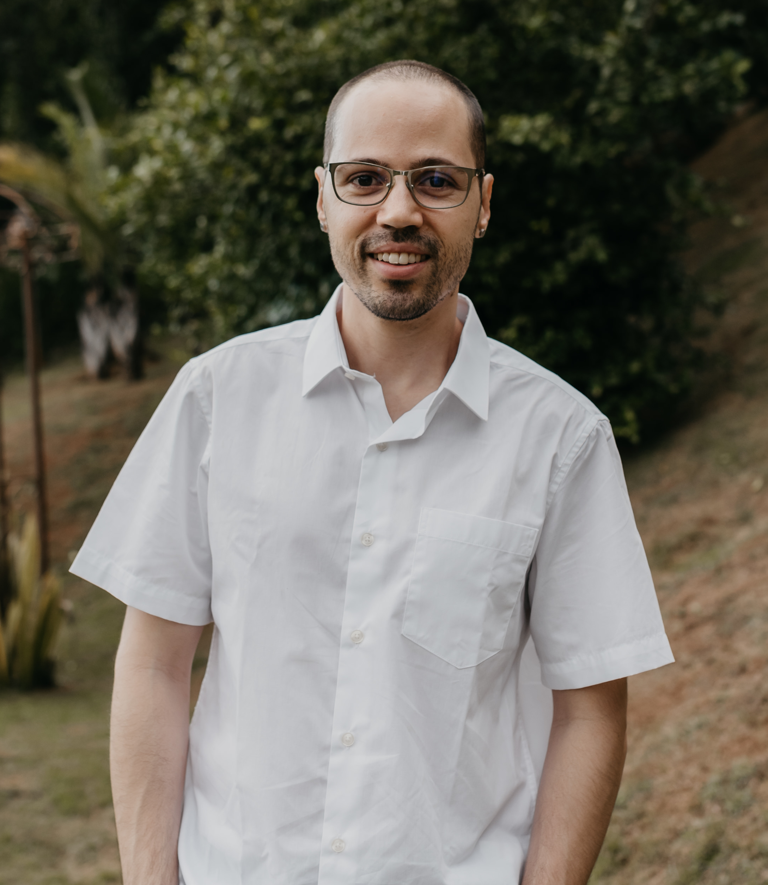

Olá! Bem-vindo ao meu canal!
Sou bacharel em Engenharia Civil e em Matemática, ambos pela Universidade Federal de Minas Gerais (UFMG). Concluí o primeiro curso no final do primeiro semestre de 2013 e o segundo no final do segundo semestre de 2018. Em abril de 2021, defendi minha dissertação (veja aqui) e obtive o título de mestre em Matemática. Em fevereiro de 2025, defendi minha tese (veja aqui) e obtive o título de doutor em Matemática. Ambos os títulos foram concedidos pelo Programa de Pós-Graduação em Matemática da UFMG (PPGMAT-UFMG). Atualmente, curso a Licenciatura em Matemática, também na UFMG. Clique aqui para ver meu currículo Lattes.
Neste espaço, compartilho dois projetos sobre matemática:
Para sugestões ou correções, por favor, envie uma mensagem para meu endereço eletrônico: silvamigor@gmail.com